Создание треков через браузер Google Crome в Android
Существует возможность создавать треки на гуглокартах из KML-файлов на платформе Android. Для этого нужно в Android запустить браузер Google Chrome, и перейти на сайт:
Появится карта примерно того района, откуда совершен выход в интернет.
Примечание: приложение "Мои карты", которое рекомендовано компанией Google для создания треков на Google Maps, позволяет создавать треки только вручную, путем задания точек и линий. В нем нет функционала создания трека из файла в KML формате.
На мобильной версии сайта Google Maps процесс создания трека из KML-файла аналогичен тому, как это происходит в браузере на обычном компьютере. Для того, чтобы лучше понимать, как работает создание трека в картах Google, лучше всего сначала попробовать создать трек на десктопном компьютере, а потом на Андроиде.
Периодически, при выполнении некоторых действий, Android будет спрашивать "Что использовать?". Для того, чтобы оставаться в браузере Chrome, нужно все время выбирать браузер Chrome:
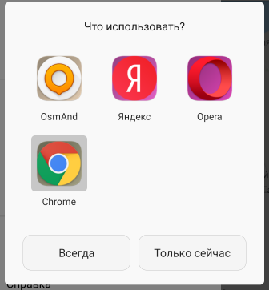
Итак, при открытии в Google Crome сайта maps.google.com, будет отображена начальная карта:
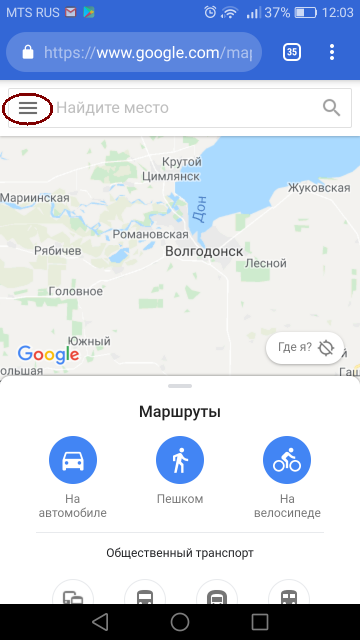
В левом верхнем углу имеется значек меню (три полоски), на который нужно нажать. Появится меню карты, в котором нужно выбрать пункт "Мои карты":
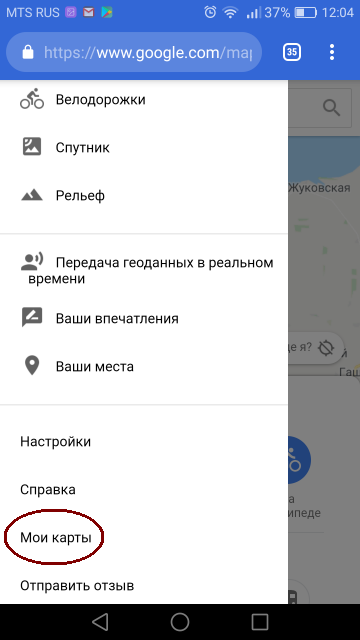
В этот момент Android, скорее всего, попробует открыть приложение "Мои карты". Как было сказано выше, нужно будет выбрать браузер Chrome, чтобы раздел "Мои карты" открылись в браузере. Появится примерно такое окно:
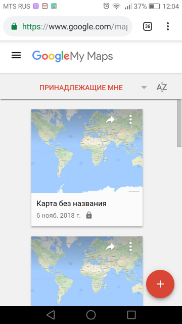
В нем нужно нажать иконку меню (три полоски), а в открывшемся меню нужно выбрать пункт "Создать новую карту":
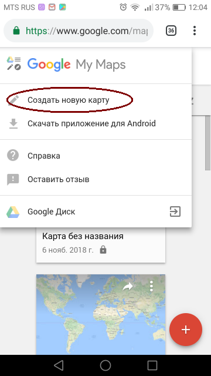
Появится окно редактирования карты. Для добавления на карту трека, нужно нажать кнопку "Legend":
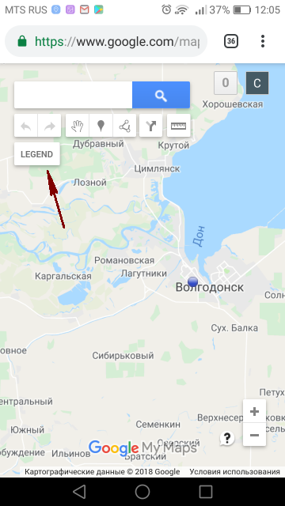
В результате откроется хорошо знакомый (по десктопной версии) интерфейс настройки параметров карты с кнопкой "Импорт" для добавления трека:
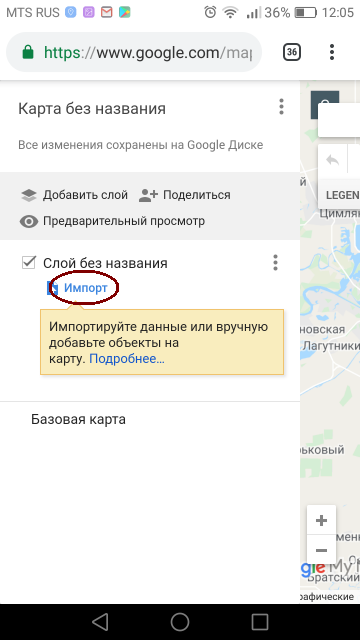
При нажатии на кнопку "Импорт" будет предложено выбрать файл трека:
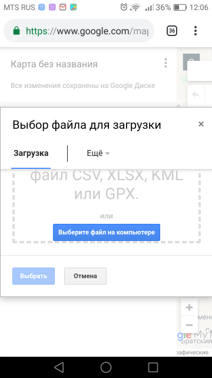
При нажатии кнопки "Выберите файл на компьютере", откроется стандартный файловый менеджер Android, в котором необходимо выбрать нужный KML-файл.
Внимание! В отличие от десктопной версии, мобильная версия сайта "Мои карты" не понимает KML-данные, которые сохранены с расширением *.xml. Открываемый файл обязательно должен иметь расширение *.kml !
После открытия KML-файла, трек будет создан:
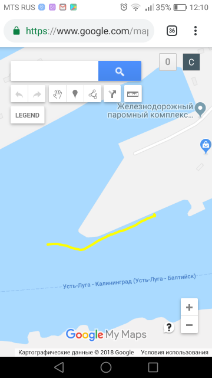
Чтобы получить ссылку на сформированную карту с треком, надо вновь нажать на кнопку "Legend". В открывшемся меню нажать кнопку "Поделиться":
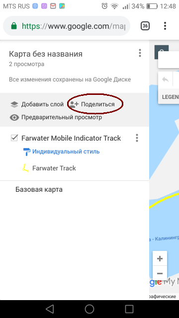
Появится окно настроек прав доступа, которое не адаптировано для мобильных устройств, и чтобы добраться до нужных кнопок, телефон надо сориентировать горизонтально. Тогда будет доступна кнопка "Документ доступен только вам" - "Изменить":
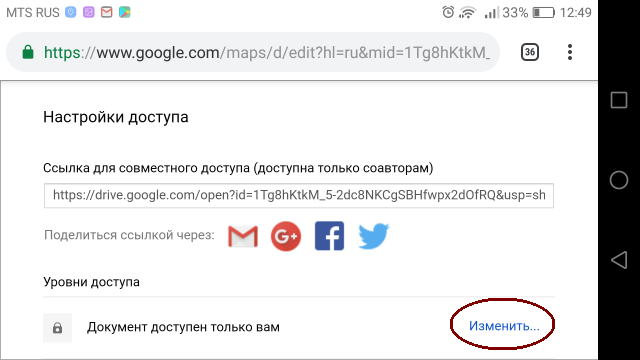
Откроется окно выбора режима доступа. Можно выбрать пункт "ВКЛ (для всех в Интернете)" и нажать "Сохранить":
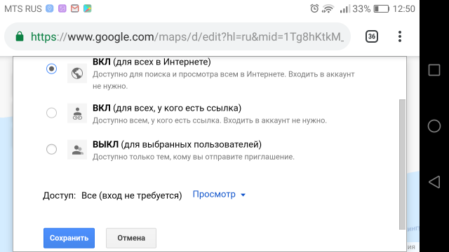
После всех этих действий можно скопировать ссылку на карту с треком в буфер обмена, или передать ее через социальные кнопки (доступны GMail, Google Plus, FaceBook, Twitter):
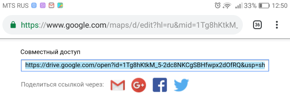
После всех этих действий карта с треком будет запомнена в аккаунте Google, и к ней можно всегда вернуться, нажав в основном меню мобильной версии сайта Google Map "Мои карты". В открываемом списке будут видны все карты, которые создавал пользователь.